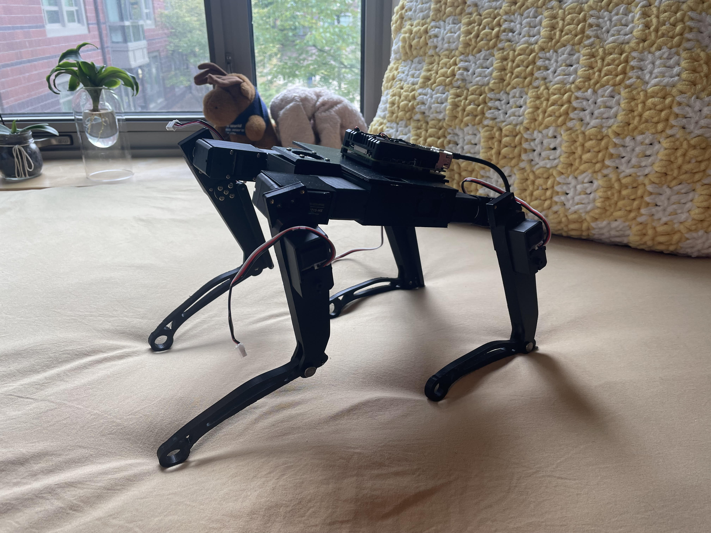

← All projects
Laelaps Quadruped
RoboticsDesigned, CADed, and built Laelaps from scratch — a quadruped robot intended as a teaching and development platform for advanced robotics software.
Every mechanical and electrical component was designed specifically for the platform, with the goal of creating a robot that is simple enough to understand end-to-end but capable enough to run meaningful locomotion experiments.
Laelaps was built to give students hands-on experience with legged robot control, from low-level motor control to gait generation and state estimation.